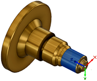

<div id="wcs_orientation_flipZ"><p>Z 軸方向を 180 度反転します。</p>

<table class="tipTable" cellspacing="10">
<tr>
<td><center></center></td>
<td><center></center></td>
</tr><tr>
<td><center><p><b>ミル Z</b></p></center></td>
<td><center><p><b>Z 軸を 180 度反転</b></p></center></td>
</tr></table>

<table class="tipTable" cellspacing="10">
<tr>
<td><center></center></td>
<td><center></center></td>
</tr><tr>
<td><center><p><b>旋盤 Z</b></p></center></td>
<td><center><p><b>Z 軸を 180 度反転</b></p></center></td>
</tr></table>
</div>